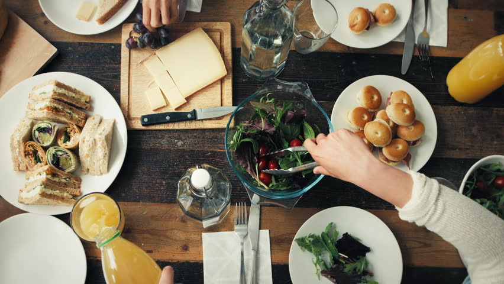

OSNOVNI PRINCIPI ZDRAVE ISHRANE
 Pravilna i zdrava ishrana postala je jedan od najvažnijih problema savremenog čoveka. U modernoj porodici, u kojoj su oba roditelja zaposlena, zbog načina života i stečenih navika, žene i muškarci nisu u mogućnosti da odvoje vreme koje bi bilo neophodno svakodnevno posvetiti ovakvoj ishrani. Mi, koji smo imali sreću da odrastemo sa mamama i bakama koje nisu bile zaposlene, znamo vrednost brižljivog i posvećenog pripremanja svakog obroka. leafČovekovo zdravlje, kreativnost, efikasnost i raspoloženje direktno su uslovljeni načinom ishrane koji svakodnevno primenjuje. Pravilna i zdrava ishrana pomaže pojedincu da se lakše suoči sa životnim teškoćama i da se zaštiti od mnogobrojnih fizičkih i psihičkih bolesti. Zdrava ishrana u porodici omogućava mnogo pravilniji fizički i duhovni razvoj dece i više radosti i ljubavi u medjusobnoj komunikaciji i zajedničkom životu. Ovi redovi će pomoći svakome, a posebno onima koji požele da nešto promene u svom životu i ishrani, i omogućiti im da saznaju, odaberu i vrlo jednostavno primene neke od navedenih principa, recepata i proizvoda.
Pravilna i zdrava ishrana postala je jedan od najvažnijih problema savremenog čoveka. U modernoj porodici, u kojoj su oba roditelja zaposlena, zbog načina života i stečenih navika, žene i muškarci nisu u mogućnosti da odvoje vreme koje bi bilo neophodno svakodnevno posvetiti ovakvoj ishrani. Mi, koji smo imali sreću da odrastemo sa mamama i bakama koje nisu bile zaposlene, znamo vrednost brižljivog i posvećenog pripremanja svakog obroka. leafČovekovo zdravlje, kreativnost, efikasnost i raspoloženje direktno su uslovljeni načinom ishrane koji svakodnevno primenjuje. Pravilna i zdrava ishrana pomaže pojedincu da se lakše suoči sa životnim teškoćama i da se zaštiti od mnogobrojnih fizičkih i psihičkih bolesti. Zdrava ishrana u porodici omogućava mnogo pravilniji fizički i duhovni razvoj dece i više radosti i ljubavi u medjusobnoj komunikaciji i zajedničkom životu. Ovi redovi će pomoći svakome, a posebno onima koji požele da nešto promene u svom životu i ishrani, i omogućiti im da saznaju, odaberu i vrlo jednostavno primene neke od navedenih principa, recepata i proizvoda.
ONAKVI SMO KAKVU HRANU UZIMAMO !
Od davnina je poznato da smo onakvi kakvu hranu uzimamo, jer sve što postoji na našoj planeti ima svoju vibraciju i dejstvo na okolinu. Tako, od onog što unosimo u svoj organizam zavisi funkcionisanje našeg celokupnog sistema, naše misli i osećanja, ponašanje, odnos prema celokupnom životu i naravno, zdravlje. Još je poznati grčki lekar Hipokrat rekao: "Tvoja hrana biće tvoj lek". Savremena medicina je nakon decenija istraživanja došla do zaključka da je uzrok čovekovih bolesti upravo hrana koju jede ili ona koju ne jede. Zdrava hrana je ona hrana koja u sebi ne sadrži previše belančevina i masti (posebno životinjskog porekla, kakve se nalaze u mesu, jajima, siru, ribi), a bogata je ugljenim hidratima, vitaminima i mineralima - a to je biljna hrana, voće, integralne žitarice, semenke. U Prvoj knjizi Mojsijevoj, koja se zove Postanje, kaže se: "I još reče Bog: Evo, dao sam vam sve bilje što nosi seme po svoj zemlji i sva drveta rodna koja nose seme; to će vam biti za hranu." (Postanje 1.29) Zdrava ishrana znači jesti što jednostavnije, ne mešati namirnice različitog sastava (na primer: ugljene hidrate sa belančevinama), kao što zdrava ishrana takodje znači jesti u umerenim količinama, ne prebrzo i halapljivo, već sa svešću o važnosti unošenja hrane u organizam, vodeći računa da hrana nije suviše hladna niti suviše vruća, preslana, prekisela ili prezačinjena. Uzimanje što raznovrsnije hrane, ali pravilno kombinovane, ima suštinski značaj za pravilnu ishranu. Da bi organizam normalno i zdravo funkcionisao moraju se uneti svi sastojci neophodni za obnavljanje ćelija u što idealnijim količinama. Nije svaki organizam isti i ne zahteva isti odnos hranljivih materija, pa je neophodno tzv. "osluškivanje" organizma, saradnja sa njim i poštovanje njegovih potreba. Kada bismo bili u stanju da upoznamo i pratimo potrebe svog organizma i da se u skladu s tim hranimo, izbegli bismo bolesti i starenje organizma. Preteranim unošenjem namirnica (posebno mesa i mlečnih proizvoda) i pogrešnim odnosom prema ishrani mi nesvesno trujemo, uništavamo svoje telo i skraćujemo mu prirodni vek zdravlja i trajanja. Da bismo se hranili pravilno, veoma je važno da se pridržavamo odgovarajućeg vremena za obrok i da ne uzimamo hranu nekontrolisano, u svako doba, bez razmišljanja. Međutim, obroke ne treba preskakati i dovoditi organizam u stanje izgladnelosti, jer tada dolazi do uništavanja određenih moždanih ćelija, nestabilnosti nervnog sistema i smanjenja otpornosti celokupnog organizma.
Deset saveta za pravilnu ishranu:
1. Jesti raznovrsnu hranu.
2. Održavati optimalnu težinu.
3. Smanjiti unošenje zasićenih masnih kiselina (masti životinjskog porekla).
4. Povećati unos polinezasićenih masnih kiselina (gi - prečišćeni puter, nerafinisana hladno ceđena ulja, puteri od semenki - kikiriki, suncokret, susam, badem, lešnik, golica-bundeva).
5. Smanjiti unos holesterola (svinjska mast, masne vrste mesa, masni sirevi, jaja).
6. Povećati unos složenih ugljenih hidrata i dijet nih vlakana (povrće, voće, integralne žitarice).
7. Redovno unošenje tečnosti: voda, čajevi, prirodni sokovi.
8. Smanjiti unošenje šećera, naročito belog rafi-nisanog, zameniti ga medom i malteksom.
9. Smanjiti unos soli, posebno stone kuhinjske.
10. Smanjiti i izbgavati unos kafe, alkohola i duvana.
Pravilna i zdrava ishrana postala je jedan od najvažnijih problema savremenog čoveka. U modernoj porodici, u kojoj su oba roditelja zaposlena, zbog načina života i stečenih navika, žene i muškarci nisu u mogućnosti da odvoje vreme koje bi bilo neophodno svakodnevno posvetiti ovakvoj ishrani. Mi, koji smo imali sreću da odrastemo sa mamama i bakama koje nisu bile zaposlene, znamo vrednost brižljivog i posvećenog pripremanja svakog obroka. leafČovekovo zdravlje, kreativnost, efikasnost i raspoloženje direktno su uslovljeni načinom ishrane koji svakodnevno primenjuje. Pravilna i zdrava ishrana pomaže pojedincu da se lakše suoči sa životnim teškoćama i da se zaštiti od mnogobrojnih fizičkih i psihičkih bolesti. Zdrava ishrana u porodici omogućava mnogo pravilniji fizički i duhovni razvoj dece i više radosti i ljubavi u medjusobnoj komunikaciji i zajedničkom životu. Ovi redovi će pomoći svakome, a posebno onima koji požele da nešto promene u svom životu i ishrani, i omogućiti im da saznaju, odaberu i vrlo jednostavno primene neke od navedenih principa, recepata i proizvoda.ONAKVI SMO KAKVU HRANU UZIMAMO !
Od davnina je poznato da smo onakvi kakvu hranu uzimamo, jer sve što postoji na našoj planeti ima svoju vibraciju i dejstvo na okolinu. Tako, od onog što unosimo u svoj organizam zavisi funkcionisanje našeg celokupnog sistema, naše misli i osećanja, ponašanje, odnos prema celokupnom životu i naravno, zdravlje. Još je poznati grčki lekar Hipokrat rekao: "Tvoja hrana biće tvoj lek". Savremena medicina je nakon decenija istraživanja došla do zaključka da je uzrok čovekovih bolesti upravo hrana koju jede ili ona koju ne jede. Zdrava hrana je ona hrana koja u sebi ne sadrži previše belančevina i masti (posebno životinjskog porekla, kakve se nalaze u mesu, jajima, siru, ribi), a bogata je ugljenim hidratima, vitaminima i mineralima - a to je biljna hrana, voće, integralne žitarice, semenke. U Prvoj knjizi Mojsijevoj, koja se zove Postanje, kaže se: "I još reče Bog: Evo, dao sam vam sve bilje što nosi seme po svoj zemlji i sva drveta rodna koja nose seme; to će vam biti za hranu." (Postanje 1.29
Deset saveta za pravilnu ishranu:
1. Jesti raznovrsnu hranu.
2. Održavati optimalnu težinu.
3. Smanjiti unošenje zasićenih masnih kiselina (masti životinjskog porekla).
4. Povećati unos polinezasićenih masnih kiselina (gi - prečišćeni puter, nerafinisana hladno ceđena ulja, puteri od semenki - kikiriki, suncokret, susam, badem, lešnik, golica-bundeva).
5. Smanjiti unos holesterola (svinjska mast, masne vrste mesa, masni sirevi, jaja).
6. Povećati unos složenih ugljenih hidrata i dijet nih vlakana (povrće, voće, integralne žitarice).
7. Redovno unošenje tečnosti: voda, čajevi, prirodni sokovi.
8. Smanjiti unošenje šećera, naročito belog rafi-nisanog, zameniti ga medom i malteksom.
9. Smanjiti unos soli, posebno stone kuhinjske.
10. Smanjiti i izbgavati unos kafe, alkohola i duvana.
Nasi saradnici

Dusan Petrovic
Dr.Mr Nutricionista
VMA

Nikola Delibasic
Fiziolog
VMA

Nevena Obradovic
Life Couch
VMA